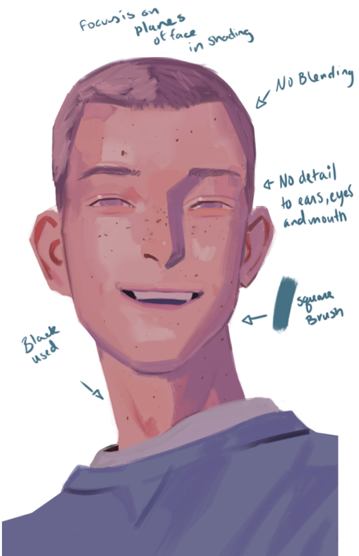
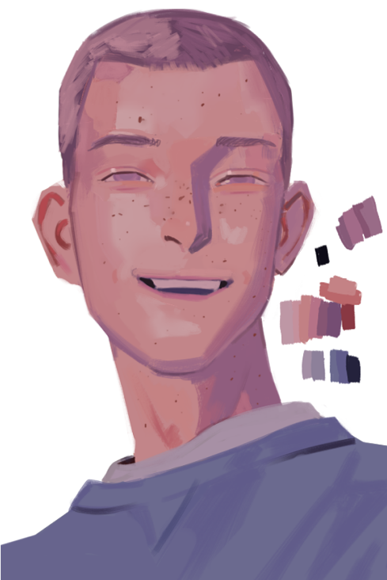
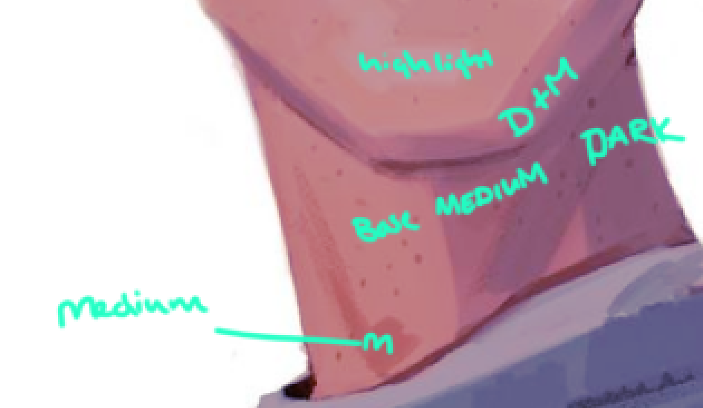

Welcome!

Check Menu to locate more info
Introduction
Often if you want to improve is to learn how to copy and take things from learning what you copied. If you never copy paintings or learn from other artwork then you might miss out on a lot of things you could possibly learn. Copying is important skill as it helps with studying life and learning how to use different techniques, texture, colors, etc. All things you can benefit from and grow as an artist. How to begin studying other artwork You want to find something different compared to what you are not used to and of course like.
Using this artist's work:
The first thing you do is make notes of things you see within the piece of work and along with things you can learn from it.そばかす pic.twitter.com/dzh76tAbW6
— sekuda | 初画集『POCKETS』発売中 (@i_WantMoreTime) February 29, 2020
-
How to write notes:
- What textures and brushes do you think they are using?
- What is their colors like?
- Where is detail?
- Things that stand out to you?
- Where are things curved and rounded?
- Where are things blunt and sharp?
Using my own study of the work to explain how to break it down:

Take notes of color picks
Take more notes of color picks, swatch the work even eye drop the colors if you need to. It's important you watch and learn how they pick the colors. What is the value distance? What is the color hue shifts? Where do they use cools and warms?

How to start the Foundation
Next thing is to sketch: Focus on line motions and also basic forms then move onto the smaller details. You have to really just visualize what forms and lines are making up the main base of each thing within the picture. Don't move on until you get this area right.
Now do the same for the face
After this you want to focus on one area at a time and shade according to your reference you are copying. Always use layers if you are not confident at any stage as this allows you to go back and fix what you messed up.
You don't need to do it perfectly but you need to look like image in which you are studying. Also try to take something you learned from the piece and use it. It shouldn't be something you study for a week then forget and never use.
Values!
Focus on shadows, highlights, and other tones within the work.
Finished piece
You do not need to use the specific artist here used in the example. You should find an artist who has work you like.